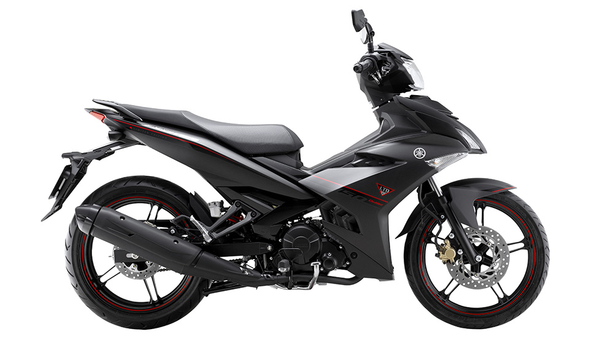

xe ga
xe số
PKL
Top 10 xe máy 50cc cho học sinh được lựa chọn nhiều nhất 2023
Nhu cầu sử dụng xe máy 50 phân khối của học sinh ngày càng tăng dần. Đây được xem là lựa chọn được nhiều phụ huynh và các bạn yêu thích vì tính linh hoạt cao, không cần các bậc cha mẹ phải đưa đón mỗi ngày. Hiện nay trên thị trường có rất nhiều dòng xe máy 50cc cho học sinh, đa dạng về mẫu mã và giá cả. Qua bài viết sau đây, Chợ Tốt Xe sẽ gợi ý cho bạn top 10 xe máy cho học sinh cấp 3 chất lượng, giá thành hợp lý.Ưu điểm của xe máy 50cc cho học sinh cấp 3
Khi bạn có nhu cầu sử dụng những dòng xe nhỏ gọn và không cần phải có bằng lái xe thì xe máy 50cc cho học sinh sẽ là lựa chọn hàng đầu. Bên cạnh đó, mẫu xe 50cc còn được nhiều người yêu thích bởi các ưu điểm sau:
Di chuyển thoải mái và tiện lợi
Điểm cộng đầu tiên của chiếc xe máy 50 phân khối chính là được ứng dụng công nghệ hiện đại. Điều này sẽ giúp cho người chạy xe cảm nhận được sự trơn tru, ổn định, di chuyển nhẹ nhàng trên các con đường dài.

Với sự cải tiến không ngừng của công nghệ, phuộc nhún của xe đã được lắp thêm lò xo giảm chấn thủy lực, tiện lợi hơn khi di chuyển. Bạn có thể dễ dàng điều khiển xe qua các con đường gồ ghề mà không cảm thấy khó chịu.
Khi sử dụng phương tiện 50 phân khối thì người lái không bắt buộc phải có bằng lái. Tiêu chí này phù hợp cho các bạn học sinh khi có nhà ở xa trường, có thể điều khiển xe mà không sợ vi phạm luật giao thông.
Dễ dàng bảo trì và sửa chữa
Xe máy 50cc cho học sinh là một dòng xe phổ biến nên bạn sẽ dễ dàng tìm được nơi bảo trì, sửa chữa xe. Hầu như bất kỳ tiệm sửa xe nào đều có dịch vụ chăm sóc cho dòng xe 50 phân khối.
Trong một số trường hợp, bạn gặp các vấn đề khi đang di chuyển trên đường thì bạn có thể gọi vào hotline để được nhân viên bảo dưỡng xe đến hỗ trợ. Vì vậy bạn không cần quá lo lắng về vấn đề bảo dưỡng xe.
Giá bán tốt
Ưu điểm của những dòng xe 50 phân khối chính là có mức giá đa dạng. Giá xe máy 50cc cho học sinh sẽ phụ thuộc vào từng đại lý và thương hiệu của xe.
Đa phần giá thành của những dòng xe 50 phân khối sẽ giao động từ 15 đến 20 triệu, phù hợp với kinh tế của những gia đình đang nuôi con ăn học. Các bậc phụ huynh có thể nhanh chóng tìm được một chiếc xe 50cc thiết kế ấn tượng và an toàn.
Vậy có những mẫu xe máy 50cc nào tốt cho học sinh hiện nay?
Top 10 xe máy 50cc cho học sinh được lựa chọn nhiều nhất 2023
Trên thị trường hiện nay có rất nhiều dòng xe máy 50 phân khối. Trước khi quyết định mua bất kỳ một mẫu xe nào, bạn cần phải tìm hiểu kỹ thông tin xe và cân nhắc về mức giá phù hợp nhé!
Sau đây chính là những mẫu xe máy 50cc được nhiều bạn trẻ yêu thích.
Honda Scoopy
Scoopy là dòng xe máy Honda cho học sinh cấp 3 nhỏ gọn, được nhiều bạn nữ yêu thích. Xe Scoopy cao 1m, chiều rộng là 0,65m và chiều cao là 1,695m. Mặc dù xe có kích thước nhỏ nhưng vẫn đáp ứng được đầy đủ tiện ích cần thiết.

Trọng lượng của xe là 72 kg. Xe có bốn bản màu là đen, đỏ, trắng và đen nhám để bạn lựa chọn. Bạn có thể chọn màu sắc phù hợp với phong thủy bản thân để đem đến sự may mắn, bình an khi đi đường dài.
Honda Scoopy được lắp thêm hệ thống khóa xe thông minh, hệ thống báo động chống trộm. Xe còn được trang bị hệ thống đèn LED hiện đại, tạo nên được vẻ ngoài nổi bật, giúp bạn dễ dàng quan sát đường đi khi di chuyển ban đêm.
Dung tích của cốp xe là 15.4 lít, chứa đựng được nhiều vật dụng cá nhân. Giá bán của xe khá cạnh tranh so với những dòng xe tay ga 50cc, chưa đến 20 triệu. Xe được lắp đặt hệ thống phun xăng điện tử, giúp tiết kiệm nhiên liệu tối đa.
Honda Today 50cc
Một trong những mẫu xe máy 50cc cho học sinh quen thuộc tại thị trường Việt Nam chính là Honda Today 50cc. Kể từ khi xuất hiện đến nay, dòng xe tay ga này luôn được các bạn nữ sinh săn đón bởi mẫu mã thời thượng và giá thành hợp lý.
Honda Today 50cc được có động cơ dung tích xi lanh 49,5cm3, giúp vận hành êm ái, bền bỉ. Xe được trang bị hệ thống phun xăng điện tử hiện đại, chỉ tiêu tốn ~ 1,8 lít xăng/ 100km.
Kích thước của xe theo chiều dài, rộng, cao lần lượt là 1,68, 0,65, 1,03 (m). Xe có tổng cộng 8 phiên bản màu khác nhau để bạn lựa chọn. Cụ thể: Cam đậm, hồng cánh sen, hồng đậm, đỏ mận, đen bóng, xanh lục, xanh lam và xám tro.
Cốp xe rộng rãi, chứa được nhiều vật dụng cá nhân. Giá bán xe chưa đến 18 triệu, được đánh giá là mức chi phí hợp lý. Xe có trọng lượng khoảng 70 kg, di chuyển linh hoạt trong các khu vực đông dân cư.
Honda Giorno 50cc
Nếu bạn đang tìm kiếm xe tay ga 50cc nhỏ gọn, vẫn toát lên nét hiện đại thì Honda Giorno 50cc sẽ là lựa chọn phù hợp. Dòng xe máy 50cc cho học sinh này đã trở thành mẫu xe có doanh số bán cao nhất của Honda.

Phiên bản tiêu chuẩn của xe có 4 màu là đen – trắng, nâu – ánh kim, trắng ngà – ngọc trai, hồng đậm – nhạt. Riêng đối với phiên bản cao cấp của dòng xe này sẽ có hai màu là trắng – xanh dương và hồng ánh kim – trắng.
Xe có kích thước theo chiều dài x rộng x cao lần lượt là 1,714 x 0,696 x 1,052m. Chiều cao này sẽ thích hợp với các cô nàng “chân ngắn” đáng yêu. Trọng lượng của Honda Giorno 50cc là 85 kg, dễ dàng di chuyển trong khu vực đông đúc.
Xe được trang bị hệ thống phun xăng điện tử PGM-FI vô cùng hiện đại, tiết kiệm nhiên liệu tối đa. Công suất của Honda Giorno là 4,5 mã lực, momen xoắn cực đại 4,1 Nm, đạt 7500 vòng/phút. Giá bán hiện nay của xe khoảng 70 triệu đồng.
Galaxy 50cc
Bên cạnh những dòng xe tay ga, thì xe số 50cc cũng được nhiều bạn quan tâm. Trên thị trường hiện nay, nổi bật nhất là Sym Galaxy 50cc, được đánh giá là một trong những mẫu xe máy 50cc cho học sinh đáng sở hữu nhất.
Xe có 2 phiên bản là phanh thường và phanh đĩa, có 3 màu: Xanh đen, đỏ đen và đen mờ vàng. Giá xe chỉ dao động từ 15 đến 16 triệu đồng, phù hợp với kinh tế của hộ gia đình đang nuôi con ăn học.
Xe có chiều dài là 1,94m, chiều rộng là 0,695m, chiều cao là 1,095m. Tổng trọng lượng của Sym Galaxy 50cc là 99kg.
Với trang bị buồng đốt hình cầu, xe tối ưu hóa được việc đốt cháy nhiên liệu. Bạn chỉ cần bơm 1,5 lít xe thì có thể chạy đến 100km.
Công suất của xe đạt 7500 vòng/phút, momen xoắn cực đại là 6500 vòng/phút. Bộ phuộc cứng cáp, được kèm thêm bàu dầu chống sốc giúp cho xe vận hành mượt mà hơn. Bộ khoác bên ngoài sắc sảo, mạnh mẽ, phù hợp với những bạn yêu thích thể thao.
Yamaha Exciter 50cc
Yamaha Exciter 50cc là dòng xe tay côn, mang thiết kế trẻ trung, có nhiều nét tương đồng với Exciter 135cc. Nếu như bạn là người yêu thích phong cách hiện đại, cá tính, thì đây là mẫu xe phù hợp với bạn.
Xe có tổng cộng 5 bản màu là đen, xanh, đen nhám, đỏ mận, đen đỏ để bạn chọn lựa. Mức giá của xe chỉ khoảng 20 triệu đồng, là mẫu xe máy 50cc cho học sinh thuộc phân khúc tầm trung.
Thông số của xe theo chiều dài x rộng x cao lần lượt là 1,9m x 0,66m x 1,04m. Trọng lượng của xe Yamaha Exciter là 90kg.
Phía trước của xe được thiết kế mang đậm phong cách thể thao, phù hợp cho cả nam và nữ sử dụng. Xe có 4 kỳ, 1 xi lanh và công suất tối đa đạt 2,2 kw tại 7500 vòng/phút. Bên phải là đèn chiếu sáng, bên trái còi xe, lốp trước là phanh đĩa còn lớp sau là phanh cơ.
Xe Kymco Like
Kymco Like là chiếc xe máy 50cc cho học sinh thích hợp với những bạn mạnh mẽ, năng động. Đặc trưng của chiếc tay ga này chính là luôn hướng đến sự phóng khoáng, tươi mới nhưng vẫn đảm bảo được sự nhỏ gọn.
Dòng xe này có bốn phiên bản màu (đen, xám, trắng, đỏ) để bạn lựa chọn, mang đến sự sang trọng, đẳng cấp. Mức giá của xe dao động từ 22 đến 23 triệu, tùy theo đại lý và màu sắc xe.
Kymco Like 50cc có chiều dài x chiều cao x chiều rộng lần lượt là 1,845m x 1,125m x 0,685m. Trọng lượng của xe tầm trung, chỉ khoảng 101 kg. Tải trọng của xe lên đến 150kg nên bạn có thể thoải mái chở thêm người hoặc đồ vật.
Phần yên xe được thiết kế dài, chia thành 2 khu vực cho người ngồi sau và người lái. Đối với phần yên sau lái sẽ gờ chống trượt an toàn.
Xe được trang bị động cơ 4 thì, công suất tối đa là 8500 vòng/phút, làm mát động cơ bằng không khí. Dung tích bình xăng lên đến 6 lít, hỗ trợ bạn chạy đường dài mà không sợ hết xăng bất chợt.
Xe Kymco Candy
Kymco Candy thuộc dòng xe tay ga, có động cơ 4 thì. Mẫu này có thiết kế thời thượng, phù hợp với phong cách năng động.

Mẫu xe này có tổng cộng 4 màu là đen, trắng, đỏ, xám để bạn chọn lựa. Mức giá của xe dao động từ 23 đến 25 triệu đồng, tùy theo màu sắc và chính sách đang có của đại lý.
Kích thước của Kymco Candy theo chiều dài x rộng x cao lần lượt là 1,86, 0,68, 1,13 (m). Trọng lượng của xe là 104kg, không quá nặng nên các bạn nữ có thể sử dụng dễ dàng.
Xe có công suất tối đa là 2.7 mã lực, đạt 8.000 vòng/ phút, còn mô-men xoắn cực đại là 3.5 Nm/ quay 6.000 vòng/ phút. Với trang bị công nghệ mới, xe có thể dễ dàng di chuyển trên mọi địa hình êm ái, bền bỉ.
SYM Angela
Xe được đánh giá là một trong các dòng xe máy 50cc cho học sinh đáng sở hữu nhất. Kiểu dáng của dòng xe số này mang đậm tính trẻ trung, thanh thoát, phù hợp với phái nữ.
Xe gồm có 4 bản màu là xanh/trắng, đen mờ/đỏ, đỏ/trắng, đen mờ/vàng thoải mái cho bạn chọn lựa. Mức giá của xe dao động từ 15 đến 18 triệu đồng, phụ thuộc vào màu sắc và chính sách bán hàng của đại lý.
Nếu xét về mặt tổng thể, kích thước của xe theo tứ tự dài x rộng x cao là 1,92 x 0,68 x 1,07 (m). Trọng lượng xe chỉ 97 kg, thích hợp cho những bạn nữ có vóc dáng nhỏ nhắn.
Xe sở hữu động cơ 4 thì, đạt công suất tối đa là 2,78 mã lực, trong đó đạt 7500 vòng quay/ phút; momen xoắn cực đại là 2,94 Nm, còn vòng tua sẽ là 6500 vòng/ phút. Bên cạnh đó, xe còn có hộc chứa đồ phía trước để người sử dụng có thể chứa các vật tùy thân.
SYM Elegant
Nếu như bạn yêu thích chiếc xe có vẻ ngoài khỏe khoắn, trẻ trung thì Sym Elegant sẽ là gợi ý phù hợp với bạn. Đây là mẫu xe được các bạn nam ưa chuộng, tuy nhiên nhiều bạn nữ cá tính cũng yêu thích kiểu dáng này.

Dòng xe số này có trọng lượng là 95kg, kích thước (Dài – Cao – Rộng) là 1,92m – 1,06m – 0,68m. Hiện nay, xe có 4 bảng màu là đỏ đen, xanh đen, đen mờ vàng và mờ đỏ. Xe có mức giá khoảng 14 triệu đồng tại thị trường Việt Nam, tùy theo bản màu.
Xe SYM Elegant 50cc được trang bị động cơ 4 thì, công suất tối đa là 2,78 mã lực, đạt vòng tua 7500 vòng/phút. Hệ truyền động 4 số hiện đại giúp cho xe có thể di chuyển nhẹ nhàng và êm ái trên mọi địa hình.
Dream 50cc
Mẫu xe máy 50cc cho học sinh cuối cùng trong danh sách ngày hôm nay chính là Dream 50cc. Xe có thiết kế cổ điển nhưng không kém phần trẻ trung, năng động.
Kích thước của xe theo chiều dài x chiều rộng x chiều cao lần lượt là 1,715 m x 0,696 m x 1,052 m. Khối lượng của xe là 80kg.
Xe có hai màu là trắng – đen và đen – đỏ. Giá của xe rơi vào khoảng 14 triệu, phụ thuộc vào màu sắc bạn lựa chọn.
Trái tim của xe Dream 50cc chính là động cơ 4 kỳ kèm với hệ làm mát bằng không khí. Công suất tối đa của xe có thể lên đến đến 4,41 kW/7.000 vòng/phút. Theo đánh giá từ nhiều khách hàng, xe có động cơ vận hành mạnh mẽ và khả năng tiết kiệm nhiên liệu tốt.
Những lưu ý khi mua xe máy 50cc cho học sinh
Nếu như đây là lần đầu tiên bạn mua xe 50cc, chắc chắn bạn sẽ phân vân vì không biết nên chọn dòng xe nào. Chợ Tốt Xe đã liệt kê một vài tiêu chí và lưu ý quan trọng, giúp bạn chọn được chiếc xe phù hợp với nhu cầu bản thân, cụ thể:
- Giá cả xe và chi phí vận hành: Bạn cần biết được chi phí khi mua xe bao gồm giấy tờ, thủ tục liên quan, bảo hiểm xe,… để tránh phát sinh chi phí ngoài ý muốn. Bạn nên tham khảo chi phí vận hành của xe như độ bền phương tiện, linh kiện, mức tiêu hao nhiên liệu,… để nắm rõ thông tin tổng quát nhất.
- Kiểu dáng và thông số kỹ thuật: Đối với những bạn có dáng người thấp thì nên mua những chiếc xe có phần yên thấp, trọng lượng từ 75 – 90kg là hợp lý. Đặc biệt khi mua xe bạn cần phải quan tâm đến thông số kỹ thuật như phuộc xe, phanh, khối động cơ, kích thước,… là những thông tin bạn cần nắm rõ.
- Mua tại các điểm uy tín: Bạn nên mua tại những địa điểm chất lượng, bán xe chính hãng. Nếu như bạn bắt gặp những chiếc xe có mức giá quá rẻ so với thị trường thì hãy cân nhắc xem điểm mua này có thật sự chất lượng hay không nhé!
Mua xe máy 50cc cho học sinh ở đâu uy tín?
Với sự phát triển không ngừng của công nghệ, nhiều trang web kết nối giữa người bán và người mua xe đã ra đời để hỗ trợ người dùng. Một trong những website đạt được nhiều lượt đánh giá 5 sao nhất chính là Chợ Tốt Xe.
Ưu điểm nổi bật của trang web này chính là giao diện thông minh, “Dễ tìm – Dễ mua”. Trang web đã đạt hơn 16 triệu lượt truy cập/ tháng, cùng với 40 nghìn tin đăng bán xe đầy đủ giấy tờ, hình ảnh rõ ràng.
Khi mua xe máy 50cc cho học sinh tại Chợ Tốt Xe, chúng tôi cam kết:
Kết luận
Bài viết trên đã cung cấp cho bạn danh sách những mẫu xe máy 50cc cho học sinh được nhiều khách hàng ưa chuộng. Nếu như bạn muốn được tư vấn chi tiết hơn, đừng ngần ngại liên hệ đến Chợ Tốt Xe để được hỗ trợ nhé!
Chúc bạn lựa chọn được mẫu xe máy 50cc cho học sinh ưng ý!
BÀI VIẾT LIÊN QUAN
NHÓM 6:
Nguyễn Tài Nhất:221230948
Nguyễn Đức Nguyên:221230946
Nguyễn Minh Quang:221230963
Bạch Phương Anh:221230729